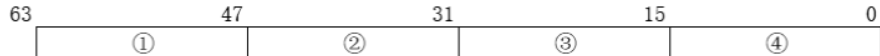

# 楔子
句柄表份分为进程句柄表和全局句柄表两种。
当一个线程使用 OpenProcess 函数去获得另一个进程的句柄时，首先会进入 R0，根据 PID 查找全局句柄表，找到这个进程的结构体对象后，插入到自己的进程句柄表中，然后把这个对象在自己的进程句柄表中的索引作为返回值返回。
# 句柄的由来
出自《Windows 内核原理与实现》129 页。
Windows 执行体实现了一套对象机制来管理各种资源或实体。每种对象都有一个类型对象，类型对象定义了该类对象的一些特性和方法。对象管理器也定义了一个全局名字空间，提供了根据名称来解析对象的同一机制。类型对象通过提供自定义的 Parse 方法可以扩展此名字空间。对象管理器中的对象是执行体对象，它位于系统空间，考虑到安全性，在进程空间不能直接通过地址来引用它们。
在 Windows 系统中需要使用到句柄 (handle) 来管理进程中的对象引用。当一个进程利用名称来创建或打开一个对象时，将获得一个句柄，该句柄指向所创建或打开的对象。以后，该进程无须使用名称来引用对象，使用此句柄即可访问。这样即保证了安全性，也提高了引用对象的效率。当两个应用程序以共享方式打开了同一个文件，那么，它们将分别得到各种的句柄，且都可以通过句柄操作该文件。尽管两个应用程序得到的句柄的值并不相同，但是这两个句柄所指的文件却是同一个。因此，句柄只是一个对象引用，同一个对象在不同的环境下可能有不同的引用（句柄）值。
在 Windows 系统中，句柄是进程范围内的对象引用，换句话说，句柄仅在一个进程范围内才有效。一个进程的句柄传递给另一个进程后，句柄值将不再有效。
# 进程句柄表
# 什么是句柄（内核对象）
当一个进程创建或打开一个内核对象时，将获得一个而句柄，通过这个句柄可以访问内核对象。
如：
HANDLE g_hMutex = ::CreateMutex(NULL,FALSE, "XYZ"); | |
HANDLE g_hMutex = ::OpenMutex(MUTEX_ALL_ACCESS,FALSE, "XYZ"); | |
HANDLE g_hEvent = ::CreateEvent(NULL, TRUE, FALSE, NULL); | |
HANDLE g_hThread = ::CreateThread(NULL, 0, Proc, NULL, 0, NULL); |
这些内核对象是指创建时需要指定 LPSECURITY_ATTRIBUTES 参数的对象。
注意：
- 窗口、字体、笔刷等，是用户句柄，并不是内核句柄，与本章所学句柄不一样。
- 创建句柄不等同于打开句柄，当创建的时候，操作系统会在零环为内核对象分配一个结构体（例如 CreateEvent），如果自己或他人打开了这个内核对象（例如 OpenProcess），那么将不会再次为这个内核对象分配一个结构体，而是返回一个句柄的索引值。
- 若同一个内核对象被引用了 100 次，那么在句柄表中就会存储 100 个内核对象的地址。
# 为什么要有句柄
句柄存在的目的是为了避免在应用层直接修改内核对象。
如果直接返回内核对象的地址，那么就意味着我们可以在应用层修改这个地址，在内核层面一旦出错就会蓝屏，很不安全，所以微软设计了句柄（HANDLE）给 3 环使用。
Windows 的设计句柄表的理念：
- 隐藏内核对象指针
- 句柄就是索引
# 句柄表在哪
在当前进程的 EPROCESS 结构体的 0xc4 的位置
kd> dt _EPROCESS | |
+0x0c4 ObjectTable : _HANDLE_TABLE | |
... | |
kd> dt _HANDLE_TABLE | |
nt!_HANDLE_TABLE | |
+0x000 TableCode // 句柄表 | |
+0x004 QuotaProcess | |
+0x008 UniqueProcessId | |
+0x00c HandleTableLock | |
+0x01c HandleTableList | |
... |
下面详细介绍句柄表的结构。
# 句柄表的结构
句柄表是一个多层结构。EPROCESS 数据结构的 ObjectTable 域指向进程的句柄表。一个进程的句柄表包含了所有已被该进程打开的那些对象的指针。
ObjectTable 的类型为 _HANDLE_TABLE ，每个句柄项的而结构为 HANDLE_TABLE_ENTRY 。HANDLE_TABLE_ENTRY 的大小为 8B，而 Windows 执行体在分配句柄表内存时按页面（4KB 大小）来申请内存。因此，执行体每申请一个新的页面来存放句柄项，则句柄表的容量增加 512。
下面看一下 _HANDLE_TABLE 结构体，这是《Windows 内核原理与实现》一书中的，也可以参见 WRK 源码的英文介绍。
typedef struct _HANDLE_TABLE { | |
ULONG_PTR TableCode; // 指向句柄表的存储结构 | |
struct _EPROCESS *QuotaProcess; // 句柄表的内存资源记录在此进程中 | |
HANDLE UniqueProcessId; // 创建进程的 ID，用于回调函数 | |
#define HANDLE_TABLE_LOCKS 4 | |
EX_PUSH_LOCK HandleTableLock[HANDLE_TABLE_LOCKS]; // 句柄表锁，仅在句柄表扩展时使用 | |
LIST_ENTRY HandleTableList; // 所有的句柄表形成一个链表 | |
// 链表头为全局变量 HandleTableListHead | |
EX_PUSH_LOCK HandleContentionEvent; // 若在反问句柄时发生竞争，则在此推锁上等待 | |
PHANDLE_TRACE_DEBUG_INFO DebugInfo; // 调试信息，仅当调试句柄时才有意义 | |
LONG ExtraInfoPages; // 审计信息所 | |
ULONG FirstFree; // 空闲链表表头的句柄索引 | |
ULONG LastFree; // 最近被释放的句柄索引，用于 FIFO 类型空闲链表 | |
ULONG NextHandleNeedingPool; // 下一次句柄表扩展的起始句柄索引 | |
LONG HandleCount; // 正在使用的句柄表项的数量 | |
union { | |
ULONG Flags; // 标志域 | |
BOOLEAN StrictFIFO : 1; // 是否使用 FIFO 风格的重用，即先释放先重用 | |
}; | |
} HANDLE_TABLE, *PHANDLE_TABLE; |
HADNLE_TEBLE 中的 TableCode 域是一个指针，指向句柄表的最高层表项页面，它的低 2 位的值代表了当前句柄表的层数。
句柄表只有一层，该进程句柄表组多只能容纳 512 个句柄；
句柄表有两层，该进程句柄表组多只能容纳 512*1024 个句柄；
句柄表有三层，该进程句柄表组多只能容纳 512*1024*1024 个句柄；
但 Windows 执行体限定每个进程的句柄数不得超过 2 的 24 次方 也就是 16777216 个。
TableCode 指向句柄表，但每个句柄表项是有结构的，下面我们来看看它的结构：

①：这一块共计两个字节，高位字节是给 SetHandleInformation 这个函数用的，比如写成如下形式，那么这个位置将被写入 0x02：
SetHandleInformation(Handle,HANDLE_FLAG_PROTECT_FROM_CLOSE,HANDLE_FLAG_PROTECT_FROM_CLOSE); |
HANDLE_FLAG_PROTECT_FROM_CLOSE 宏的值为 0x00000002 ，取最低字节，最终 ① 这块是 0x0200 。
②：这块是访问掩码，是给 OpenProcess 这个函数用的，具体的存的值就是这个函数的第一个参数的值。
③ 和 ④ 这两个块共计四个字节，其中 bit0-bit2 存的是这个句柄的属性，其中 bit2 和 bit0 默认为 0 和 1 ; bit1 表示的函数是该句柄是否可继承， OpenProcess 的第二个参数与 bit1 有关，31-3 位加上第三位清零存储的是内核对象的地址。低 3 位是属性，2 位默认是 0；1 位表示该句柄是否可继承；0 位默认为 1。
上述句柄的结构没有官方公开化文档，是经过逆向分析得到，可以根据自己的需要进行逆向分析。
执行体在创建进程是，首先为新进程分配一个单层句柄表。句柄表的创建工作是通过调用 ExCreateHandleTable 函数来完成的，该函数调用 ExpAllocateHanleTable 来构造出事的句柄表。随着进程中句柄数量的增加，单层句柄表被扩展为二层句柄表，再进一步被扩展为三层句柄表。句柄表的扩展时由函数 ExpAllocateHandleTableEntrySlow 来实现的。
在句柄表 HANDLE_TABLE 结构中， FirstFree 域记录了当前句柄表中的空闲句柄链，这是一个单链表，但并非通过指针链接起来，而是用句柄索引值来链接。句柄索引值按 HANDLE_VALUE_INC 逐个递增，这还是一个宏定义，其值为 4。
FirstFree 域指示了链表头的索引值， HANDLE_TABLE_ENTRY 结构中的 NextFreeTableEntry 成员等于下一个空闲句柄的句柄索引值。因此当进程在执行过程中需要创建新的句柄时，执行体可以直接从空闲句柄链表头得到一个句柄，新的链表头编程原来链表头的 NextFreeTableEntry ，参见 ExpAllocateHandleTableEntry 函数的代码；而当释放句柄时，将待释放的句柄索引赋给 FristFree ，且该句柄项的 NextFreeTableEntry 赋为原来的 FirstFree 参见 ExpFreeHandleTableEntry 函数的代码。
另外， HANDLE_TABLE 结构的 NextHandleNeedingPool 域记录了下一次句柄表扩展的其实句柄索引，相当于当前句柄表中所有已分配页面都满了以后下一个页面的起始句柄索引。
理解了 Windows 进程句柄表的结构以后，我们看一下句柄表项的内容和句柄本身。
typedef struct _HANDLE_TABLE_ENTRY { | |
// | |
// The pointer to the object overloaded with three ob attributes bits in | |
// the lower order and the high bit to denote locked or unlocked entries | |
// | |
union { | |
PVOID Object; // 指向句柄所代表的的对象 | |
ULONG ObAttributes; // 最低三位有特别含义 | |
PHANDLE_TABLE_ENTRY_INFO InfoTable; // 各个句柄表页面的第一个表项，使用此成员指向一张表 | |
ULONG_PTR Value; | |
}; | |
// | |
// This field either contains the granted access mask for the handle or an | |
// ob variation that also stores the same information. Or in the case of | |
// a free entry the field stores the index for the next free entry in the | |
// free list. This is like a FAT chain, and is used instead of pointers | |
// to make table duplication easier, because the entries can just be | |
// copied without needing to modify pointers. | |
// | |
union { | |
union { | |
ACCESS_MASK GrantedAccess; // 访问掩码 | |
struct { | |
USHORT GrantedAccessIndex; | |
USHORT CreatorBackTraceIndex; | |
}; | |
}; | |
LONG NextFreeTableEntry; // 空闲时表示下一个空闲句柄索引 | |
}; | |
} HANDLE_TABLE_ENTRY, *PHANDLE_TABLE_ENTRY; |
Object 指针所指的就是句柄所代表的内核对象，它的最低 3 位有特殊的含义
| 位数 | 名称 | 含义 |
|---|---|---|
| 第 0 位 | OBJ_PROTECT_CLOSE | 表示调用者是否允许关闭该句柄 |
| 第 1 位 | OBJ_INHERIT | 指示该进程所创建的子进程是否可以继承该句柄 |
| 第 2 位 | OBJ_AUDIT_OBJECT_CLOSE | 指示关闭该对象时是否产生一个审计事件 |
因此，想要获得句柄对象的地址需要将 Object 的低 3 位清 0，但是此时所得到的对象地址指向的是对象头，偏移 0x18 的地址才是对象的真正地址。
在第二个 union 中，如果句柄表项指向一个有效的对象，那么， GranteAccess 成员记录了该句柄的访问掩码；如果是一个空闲的句柄表现，那么， NextFreeTableEntry 成员将加入到句柄表的空闲单链表中。
# 多层句柄表的解析方法
第一层
ID /4 *8
第二层
ID/4 /512 计算是那个目录
ID/4%512 *8
第三层
ID/4/512/1024
ID/4/512
ID/4%512 *8
具体要逆向内核函数 ExpLookupHandleTableEntry 。WRK 中有这个函数。
# 实验：观察进程的句柄表
我们得到的句柄值是一个索引，它的值除以 4 是句柄表的下标，通过下标能找到存储在句柄表里的句柄表项，每个占 8 字节。应该是微软考虑兼容的问题。
写个for循环，连续打开100和1000次某个内核对象（点击展开）
代码如下：
#include<stdio.h> | |
#include<Windows.h> | |
void Test() { | |
int i = 0; | |
DWORD dwPid = 0; | |
HANDLE hPro = NULL; | |
HWND hWnd = NULL; | |
hWnd = FindWindow(NULL, "计算器"); | |
GetWindowThreadProcessId(hWnd, &dwPid); | |
printf("PID:%d\n", dwPid); | |
system("pause"); | |
for (; i < 100; i++) | |
{ | |
hPro = OpenProcess(PROCESS_ALL_ACCESS, TRUE, dwPid); | |
printf("句柄：%#X\t\n", hPro); | |
} | |
} | |
int main(int argc, char* argv) { | |
Test(); | |
system("pause"); | |
return 0; | |
} |
执行结果如下：
在Windbg中查看句柄表
- 打开一个进程，本次实验就选择计算器了（calc.exe）
- 执行上面的代码
- 在 WinDbg 中定位句柄表
首先在 windbg 查看所有进程 !process 0 0 ，找到执行上面代码的进程，查看进程的 EPROCESS 结构体的 0xc4 的位置
kd> dt _EPROCESS 89d2b020 | |
nt!_EPROCESS | |
+0x000 Pcb : _KPROCESS | |
+0x06c ProcessLock : _EX_PUSH_LOCK | |
+0x070 CreateTime : _LARGE_INTEGER 0x01d81906`e28e540a | |
+0x078 ExitTime : _LARGE_INTEGER 0x0 | |
+0x080 RundownProtect : _EX_RUNDOWN_REF | |
+0x084 UniqueProcessId : 0x0000013c Void | |
+0x088 ActiveProcessLinks : _LIST_ENTRY [0x89e890a8 - 0x89d31ba8] | |
+0x090 QuotaUsage : [3] 0x618 | |
+0x09c QuotaPeak : [3] 0x808 | |
+0x0a8 CommitCharge : 0x72 | |
+0x0ac PeakVirtualSize : 0xf8f000 | |
+0x0b0 VirtualSize : 0xdf7000 | |
+0x0b4 SessionProcessLinks : _LIST_ENTRY [ 0x89e890d4 - 0x89d31bd4 ] | |
+0x0bc DebugPort : 0x89e8ba88 Void | |
+0x0c0 ExceptionPort : 0xe15d5aa0 Void | |
+0x0c4 ObjectTable : 0xe31af420 _HANDLE_TABLE // 这里 |
查看进程的句柄表：
kd> dt _HANDLE_TABLE 0xe31af420 | |
ntdll!_HANDLE_TABLE | |
[+0x000] TableCode : 0xe179b000 [Type: unsigned long] // 这个地址便是表示句柄表在哪里 | |
[+0x004] QuotaProcess : 0x89d2b020 [Type: _EPROCESS *] | |
[+0x008] UniqueProcessId : 0x13c [Type: void *] | |
[+0x00c] HandleTableLock [Type: _EX_PUSH_LOCK [4]] | |
[+0x01c] HandleTableList [Type: _LIST_ENTRY] | |
[+0x024] HandleContentionEvent [Type: _EX_PUSH_LOCK] | |
[+0x028] DebugInfo : 0x0 [Type: _HANDLE_TRACE_DEBUG_INFO *] | |
[+0x02c] ExtraInfoPages : 0 [Type: long] | |
[+0x030] FirstFree : 0x638 [Type: unsigned long] | |
[+0x034] LastFree : 0x0 [Type: unsigned long] | |
[+0x038] NextHandleNeedingPool : 0x800 [Type: unsigned long] | |
[+0x03c] HandleCount : 121 [Type: long] | |
[+0x040] Flags : 0x0 [Type: unsigned long] | |
[+0x040 ( 0: 0)] StrictFIFO : 0x0 [Type: unsigned char] |
我们以 0x7CC 这个句柄值举例，来弄清楚这个句柄值所代表的的含义。
首先让这个句柄值除以 4 得到句柄表的下标，再乘以 8（可以直接用句柄值乘以 2）得到相对于句柄表首地址的偏移，这个值加上 TableCode 的值就是这个句柄值在句柄表中所代表的句柄项，剩下的就是分析其结构了。
我们由上可知 TableCode 的值为： 0xe179b000 。
在 windbg 中查看：
kd> dq 0xe179b000 + 0x7CC * 2 | |
e179bf98 001f0fff`89d31b0b 000f01ff`89d71981 | |
e179bfa8 000f037f`89f10899 021f0003`89efdf79 | |
e179bfb8 020f003f`e3302691 000f037f`89f10899 |
那么这个 001f0fff`89d31b0b 就是句柄 0x7cc 在句柄表中所对应的句柄项。
若要根据句柄查找对应的结构体地址，我们还要对 89d31b0b 处理一下，由上面句柄表项的结构，我们知道后三比特位是属性，所以我们把后三比特位清零， b 的二进制为 1011 , 清空后为 1000 既为 8 。
所以 89d31b0b 处理后为 89d31b08 ，但是，这个地址指向的仍然不是 EPROCESS ，而是 _OBJECT_HEADER 结构体，这个是每一个内核对象都有的，被称为对象头：
kd> dt _OBJECT_HEADER | |
nt!_OBJECT_HEADER | |
+0x000 PointerCount : Int4B | |
+0x004 HandleCount : Int4B | |
+0x004 NextToFree : Ptr32 Void | |
+0x008 Type : Ptr32 _OBJECT_TYPE | |
+0x00c NameInfoOffset : UChar | |
+0x00d HandleInfoOffset : UChar | |
+0x00e QuotaInfoOffset : UChar | |
+0x00f Flags : UChar | |
+0x010 ObjectCreateInfo : Ptr32 _OBJECT_CREATE_INFORMATION | |
+0x010 QuotaBlockCharged : Ptr32 Void | |
+0x014 SecurityDescriptor : Ptr32 Void | |
+0x018 Body : _QUAD |
而 89d31b08 指向的是一个完整的内核结构，而一个完整的内核结构一定是以 _OBJECT_HEADER 开头的。不管是 EPROCESS 还是 ETHREAD 结构体，都是在 _OBJECT_HEADER 的 +0x018 Body 位置开始的。所以 89d31b08 加上 0x18 才是计算器的 EPROCESS 结构体。
在 windbg 中查看：
kd> dt _Eprocess 89d31b08 +0x18 | |
nt!_EPROCESS | |
+0x000 Pcb : _KPROCESS | |
+0x06c ProcessLock : _EX_PUSH_LOCK | |
…… | |
…… | |
…… | |
…… | |
…… | |
+0x174 ImageFileName : [16] "calc.exe" // 可以确定我们找到了 | |
+0x184 JobLinks : _LIST_ENTRY [ 0x0 - 0x0 ] | |
+0x18c LockedPagesList : (null) | |
…… | |
…… |
总结
- 一个进程可以创建、打开很多内核对象，这些内核对象的地址存储在当前进程的句柄表中。我们在应用层得到的句柄值，实际上就是当前进程句柄表的索引。
- 同一个内核对象可以被不同的进程所引用，但句柄的值可能一样也可能不一样。
- 如果有进程被其他进程打开（使用 OpenProcess）, 那么这个进程的句柄表中就会有痕迹。
# 作业
遍历（解析）某个进程的句柄表
代码如下：
#include<ntddk.h> | |
typedef struct _HANDLE_TABLE_ENTRY_INFO { | |
// | |
// The following field contains the audit mask for the handle if one | |
// exists. The purpose of the audit mask is to record all of the accesses | |
// that may have been audited when the handle was opened in order to | |
// support "per operation" based auditing. It is computed by walking the | |
// SACL of the object being opened and keeping a record of all of the audit | |
// ACEs that apply to the open operation going on. Each set bit corresponds | |
// to an access that would be audited. As each operation takes place, its | |
// corresponding access bit is removed from this mask. | |
// | |
ACCESS_MASK AuditMask; | |
} HANDLE_TABLE_ENTRY_INFO, * PHANDLE_TABLE_ENTRY_INFO; | |
typedef struct _HANDLE_TABLE_ENTRY { | |
// | |
// The pointer to the object overloaded with three ob attributes bits in | |
// the lower order and the high bit to denote locked or unlocked entries | |
// | |
union { | |
PVOID Object; // 指向句柄所代表的的对象 | |
ULONG ObAttributes; // 最低三位有特别含义 | |
PHANDLE_TABLE_ENTRY_INFO InfoTable; // 各个句柄表页面的第一个表项，使用此成员指向一张表 | |
ULONG_PTR Value; | |
}; | |
// | |
// This field either contains the granted access mask for the handle or an | |
// ob variation that also stores the same information. Or in the case of | |
// a free entry the field stores the index for the next free entry in the | |
// free list. This is like a FAT chain, and is used instead of pointers | |
// to make table duplication easier, because the entries can just be | |
// copied without needing to modify pointers. | |
// | |
union { | |
union { | |
ACCESS_MASK GrantedAccess; // 访问掩码 | |
struct { | |
USHORT GrantedAccessIndex; | |
USHORT CreatorBackTraceIndex; | |
}; | |
}; | |
LONG NextFreeTableEntry; // 空闲时表示下一个空闲句柄索引 | |
}; | |
} HANDLE_TABLE_ENTRY, * PHANDLE_TABLE_ENTRY; | |
// 从 WRK 源码中复制的宏定义 | |
#define TABLE_PAGE_SIZE PAGE_SIZE | |
#define LOWLEVEL_COUNT (TABLE_PAGE_SIZE / sizeof(HANDLE_TABLE_ENTRY)) | |
#define MIDLEVEL_COUNT (PAGE_SIZE / sizeof(PHANDLE_TABLE_ENTRY)) | |
#define LOWLEVEL_THRESHOLD LOWLEVEL_COUNT | |
#define MIDLEVEL_THRESHOLD (MIDLEVEL_COUNT * LOWLEVEL_COUNT) | |
VOID DriverUnload(PDRIVER_OBJECT pDriver) { | |
DbgPrint("我是驱动，我卸载了\t\n"); | |
} | |
VOID Func(PUCHAR pName) { | |
//VOID Func(ULONG uPid) { | |
ULONG Pro; | |
__asm { | |
mov eax, fs: [0x124] ; | |
mov eax, [eax + 0x44]; | |
mov Pro, eax; | |
} | |
// 进程结构体 EPROCESS +0x88 的位置是一个链接所有进程的双向链表 | |
PLIST_ENTRY pListProcess = (PLIST_ENTRY)(Pro + 0x88); | |
// 遍历进程 | |
while (pListProcess->Flink != (PLIST_ENTRY)(Pro + 0x88)) | |
{ | |
//EPROCESS 结构体 | |
ULONG NextProcess = ((ULONG)(pListProcess)) - 0x88; | |
if (strcmp(pName, (PUCHAR)(NextProcess + 0x174)) == 0) | |
//if (uPid == *(PULONG)(NextProcess + 0x84)) | |
{ | |
DbgPrint("Eprocess:%#X\t\n", NextProcess); | |
// 遍历句柄表 | |
// 取进程 0xc4 的地址 | |
PULONG ObjectTable = (PULONG)(*(PULONG)(NextProcess + 0xC4)); | |
DbgPrint("ObjectTable:%#X\t\n", ObjectTable); | |
PULONG TableCode = (PULONG)(*ObjectTable); | |
DbgPrint("TableCode:%#X\t\n", TableCode); | |
// 判断有进程句柄表的层数 | |
// 取最后两 bit 位 | |
switch (*TableCode & 0x3) | |
{ | |
case 0: | |
{ | |
PHANDLE_TABLE_ENTRY pTableCode = (PHANDLE_TABLE_ENTRY)TableCode; | |
DbgPrint("pTableCode:%#X\t\n", pTableCode); | |
// 开始遍历句柄表，大小时一个页 | |
for (size_t i = 1; i < LOWLEVEL_THRESHOLD ; i++) | |
{ | |
DbgPrint("[*]>>-----【第%d项】-----<<[*]", i); | |
DbgPrint("Object:%#010x\t\n", pTableCode[i].Object); | |
DbgPrint("ObAttributes:%#010x\t\n", pTableCode[i].ObAttributes); | |
DbgPrint("InfoTable:%#010x\t\n", pTableCode[i].InfoTable); | |
if (pTableCode[i].InfoTable != NULL) | |
{ | |
DbgPrint("InfoTable->AuditMask:%#010x\t\n", pTableCode[i].InfoTable->AuditMask); | |
} | |
DbgPrint("Value:%#010x\t\n", pTableCode[i].Value); | |
DbgPrint("GrantedAccess:%#010x\t\n", pTableCode[i].GrantedAccess); | |
DbgPrint("GrantedAccessIndex:%#010x\t\n", pTableCode[i].GrantedAccessIndex); | |
DbgPrint("CreatorBackTraceIndex:%#010x\t\n", pTableCode[i].CreatorBackTraceIndex); | |
DbgPrint("NextFreeTableEntry:%#010x\t\n", pTableCode[i].NextFreeTableEntry); | |
} | |
break; | |
} | |
case 1: | |
{ | |
break; | |
} | |
case 2: | |
{ | |
break; | |
} | |
case 3: | |
{ | |
break; | |
} | |
default: | |
DbgPrint("*HandleTable & 0x3 = %d", *TableCode & 0x3); | |
break; | |
} | |
} | |
pListProcess = pListProcess->Flink; | |
} | |
} | |
NTSTATUS DriverEntry(PDRIVER_OBJECT pDriver, PUNICODE_STRING pRegPath) { | |
pDriver->DriverUnload = DriverUnload; | |
DbgPrint("我是驱动,我运行了\t\n"); | |
// 遍历所有进程，遍历该进程的句柄表 | |
Func("calc.exe"); | |
return STATUS_SUCCESS; | |
} |
仅仅遍历了层数为 1 的句柄表。也可以遍历的更详细，遍历出每个句柄的类型。
实现用句柄表反调试
思路：遍历所有其他进程句柄表，看哪个进程的句柄表中保护自己的进程，如果有，说明正在被调试。
用一个驱动不停地遍历进程链表，然后遍历进程的句柄表，如果发现句柄表项和游戏 EPROCESS 相等，就意味着被 OpenProcess 了，就认为是被调试了。
代码：
暂时pass |
# 全局句柄表
在进程中可以创建、打开很多内核对象，这些内核对象的地址都存储在当前进程的句柄表中。我们在应用层得到的句柄实际上就是句柄表的索引。进程的句柄表是私有的，每个进程都有一个自己的句柄表。除此之外，系统还有一个全局句柄表，其导出变量是： PspCidTable
所有的进程和线程无论无论是否打开，都在这个表中。
每个进程和线程都有一个唯一的编号： PID 和 TID ，这两个值其实就是全局句柄表中的索引，统称 CID 。进程和线程的查询，主要是以下三个函数，按照给定的 PID 或 TID 从 PspCidTable 从查找相应的进线程对象：
PsLookupProcessThreadByCid(x, x, x); | |
PsLookupProcessByProcessId(HANDLE ProcessId, PEPROCESS *Process); | |
PsLookupThreadByThreadId(HANDLE ThreadId, PETHREAD *Thread); |
全局句柄表的结构如下：
# 观察全局句柄表
在 Windbg 中查看：通过 PID 的值和 PspCidTable 找到内核对象。
随便打开一个进程，查看其 PID，我打开的计算器的 PID 为 1212，转换为 16 进制为 0x4BC。
kd> dd PspCidTable | |
805649c0 e1003c58 00000002 00000000 00000000 | |
805649d0 00000000 00000000 00000000 00000000 | |
805649e0 00000000 00000000 00000000 00000000 | |
805649f0 00000000 00000000 00000000 00000000 | |
80564a00 00000000 00000000 00000000 00000000 | |
80564a10 00000000 00000000 00000000 00000000 | |
80564a20 00000000 00000000 00000000 00000000 | |
80564a30 00000000 00000000 00000000 00000000 | |
kd> dt e1003c58 _HANDLE_TABLE | |
nt!_HANDLE_TABLE | |
+0x000 TableCode : 0xe1005000 | |
+0x004 QuotaProcess : (null) | |
+0x008 UniqueProcessId : (null) | |
+0x00c HandleTableLock : [4] _EX_PUSH_LOCK | |
+0x01c HandleTableList : _LIST_ENTRY [ 0xe1003c74 - 0xe1003c74 ] | |
+0x024 HandleContentionEvent : _EX_PUSH_LOCK | |
+0x028 DebugInfo : (null) | |
+0x02c ExtraInfoPages : 0n0 | |
+0x030 FirstFree : 0x39c | |
+0x034 LastFree : 0x770 | |
+0x038 NextHandleNeedingPool : 0x800 | |
+0x03c HandleCount : 0n279 | |
+0x040 Flags : 1 | |
+0x040 StrictFIFO : 0y1 | |
kd> dq 0xe1005000 + 4BC * 2 | |
e1005978 00000000`89ee8021 0000055c`00000000 | |
e1005988 000000e8`00000000 00000000`89efe8a9 | |
e1005998 00000728`00000000 0000070c`00000000 | |
e10059a8 00000000`89d4e6a1 000004a0`00000000 | |
e10059b8 00000000`8a05c6a9 00000304`00000000 | |
e10059c8 00000000`8a0f1da1 00000000`8a0f16c9 | |
e10059d8 00000000`89cd7161 00000000`8a08e661 | |
e10059e8 000003f8`00000000 00000000`8a19b021 | |
kd> dt _EPROCESS 89ee8020 // 去掉低三位的属性 | |
nt!_EPROCESS | |
+0x000 Pcb : _KPROCESS | |
…… | |
…… | |
+0x174 ImageFileName : [16] "calc.exe" // 找到了 | |
…… | |
…… |
# Reference
https://blog.csdn.net/qq_41988448/article/details/104945311
《Windows 内核原理与实现》